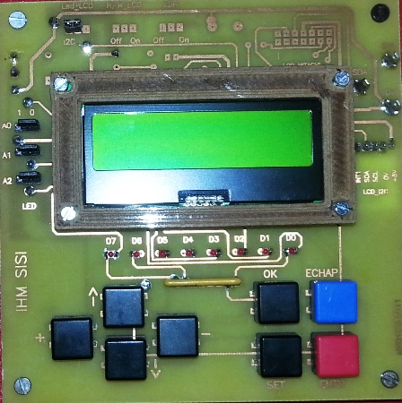
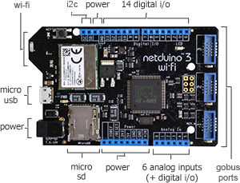

Sommaire
- LE MATERIEL
- Le circuit intégré PCF2119 : LCD controllers/drivers
- Exemple d'utilisation du circuit PCF2119 : l'IHM SSI
- Les cartes Netduino
- Les cartes FEZ
- LE LOGICIEL
- LES FASCICULES
- La page du projet MicroToolsKit
1. LE MATERIEL
1.1 Le circuit intégré PCF2119 : LCD controllers/drivers
- Présentation
- MIDAS - MC21605E6W-SPTLYI - LCD 2X16 STN LED B/L Y/VERT I2C I/F
- Documentation: pdf
- Distributeur : Farnell
Le PCF2119 est un circuit intégré destiné à la commande des matrices de points 5x8. Il est utilisé par les afficheurs à cristaux liquides (lcd) 2x16 ou 1x32. On y accède via un bus I²C. Un exemple d'afficheur utilisant ce circuit est présenté ci-dessous.

1.2 Exemple d'utilisation du circuit PCF2119 : l'IHM SSI
L'Interface Homme Machine SSI se compose :
- d'un afficheur I²C 2x16 (MIDAS ou BATRON) à PCF2119,
- de huit leds et de huit boutons-poussoir connectés à deux PCF8574.

1.3 Les cartes Netduino
Secret Labs
- Microcontrôleur : STM32F405RG 32 bits à architecture Cortex-M4 cadencé à 168 MHz.
- RAM : 164KB+.
- Flash : 1408KB.
- Port Ethernet : 10/100Mbps (Wifi:802.11b/g/n)*.
- E/S numériques : 22
- Entrées analogiques : 6
- Stockage: carte µSD
- IDE : Microsoft Visual Studio
- Framework : .NETMF 4.3
- Langages de programmation : C#, VB
- Compatibilité : shield Arduino, Gadgeteer
 |
 |
| Netduino 3 Ethernet | Netduino 3 wifi* |
- Sites à consulter : Netduino, NETMF
- Distributeurs : Mouser Electronics
1.4 Les cartes FEZ
GHI Electonics (Extrait)
- Microcontrôleur : 180 MHz 32-bit ARM Cortex-M4.(120 MHz 32-bit ARM Cortex-M3 )*
- SoC(SoM)* : G80 G120*
- RAM : 156 KB(2.87 MB)*.
- Flash : 256 KB (13.67 MB)*.
- E/S numériques : 53(60)*
- Entrées analogiques : 16(8)*
- Réseaux : Ethernet TCP/IP, WiFi, and SSL.
- Stockage: carte µSD
- IDE : Microsoft Visual Studio
- Framework : .NETMF 4.3
- Langages de programmation : C#, VB
 |
 |
| PANDA III | COBRA III* (compatible Gadgeteer) |
- Sites à consulter : GHI ELECTRONICS, NETMF
- Distributeurs : Mouser Electronics
2. LE LOGICIEL
2.1 Contenu du répertoire proposé au téléchargement
Le répertoire proposé au téléchargement (au format zip ou tar.gz) contient la solution NetduinoI2CLCD composée :
- Du projet I2CLCD : le code source de la classe I2CLcd.
- Du projet TestI2CLCD : un exemple d'utilisation de cette classe.
2.2 Le NuGet MicroToolsKit
La dernière version compilée de la classe I2CLcd se situe dans la bibliothèque MicroToolsKit disponible sur nuget.org.

Organisation des classes contenues dans MicroToolsKit [lien]
Installer cette bibliothèque dans le projet simplifie l'utilisation de cette classe.
2.3 Les Wikis
- Fascicules d'exemples de code pour les cartes Netduino. [lien]
- Fascicule d'exemples de code pour les cartes FEZ. [lien]
2.4 Description et utilisation de la classe I2CLcd
- Rôle: Contrôler un afficheur à PCF2119 via un bus I²C.
- Assembly: MicroToolsKit (disponible sur nuget.org)
- Espace de noms: Microtoolskit.Hardware.Displays
Création d'un projet avec l'IDE Visual Studio
- Utiliser le gestionnaire de paquets NuGet pour ajouter l'assembly MicroToolsKit (disponible sur nuget.org) dans le répertoire Références du projet.(clic droit sur Références puis Gérer les packages NuGet...)
- Ajouter l'espace de noms Microtoolskit.Hardware.Displays dans l'en-tête du fichier source.
- Créer un objet en utilisant un des constructeurs I2CLcd.
- Initialiser le LCD avec la méthode Init.
- Effacer l'écran avec la méthode ClearScreen.
- Utiliser les autres méthodes pour gérer l'affichage.
Exemple
using System;
using System.Threading;
using testMicroToolsKit.Hardware.Displays;
namespace FezPanda
{
public class Program
{
public static void Main()
{
byte InitJauge = 0x5A;
Int16 Freq = 100;
I2CLcd lcd = new I2CLcd(I2CLcd.LcdManufacturer.BATRON, Freq);
lcd.Init(); lcd.ClearScreen();
lcd.PutString(2, 0, "Hello");
lcd.PutChar(11, 0, 0x4E);
lcd.PutString(3, 1, "Batron");
for (byte w = InitJauge; w < 0x60; w++)
lcd.PutChar((byte)(w - 0x51), 1, w);
while (true)
{
lcd.PutChar(14, 0, 0x11); lcd.PutChar(15, 0, 0x21); lcd.PutChar(13, 0, 0x4C);
Thread.Sleep(200);
lcd.PutChar(14, 0, 0x21); lcd.PutChar(15, 0, 0x11); lcd.PutChar(13, 0, 0x4B);
Thread.Sleep(200);
lcd.PutChar(0, 0, (byte)InitJauge);
InitJauge++;
if (InitJauge > 0x5F) InitJauge = 0x5A;
}
}
}
}
Constructeurs
| Syntaxe | Description | |
 |
I2CLcd() | Instancie un objet "I2CLcd" avec les paramètres : - Fabricant = Midas - Fréquence du bus: 100kHz |
|
I2CLcd(byte I2C_Add_7bits) |
Instancie un objet "I2CLcd". I2C_Add_7bits: adresse I²C sur 7 bits attribuée à l'afficheur.
|
|
I2CLcd(LcdManufacturer ManufacturerName) | Instancie un objet "I2CLcd". ManufacturerName: nom du fabricant. Il correspond à l'adresse I²C du LCD :
|
|
I2CLcd(byte I2C_Add_7bits, Int16 Frequency) | Instancie un objet "I2CLcd". I2C_Add_7bits est l'adresse I²C sur 7 bits attribuée à l'afficheur.
|
|
I2CLcd(LcdManufacturer ManufacturerName, Int16 Frequency) | Instancie un objet "I2CLcd". ManufacturerName est le nom du fabricant. Il correspond à l'adresse I2C du LCD :
|
Enumérations
| Syntaxe | Description | |
| LcdManufacturer |
MIDAS : 0x3a (par défaut) BATRON : 0x3b |
|
| CursorType |
Blink : clignotant (par défaut) Hide : caché Underline : soulignement |
Méthodes
| Syntaxe | Description | |
|
void ClearScreen() | Efface l'écran (2 x 16 caractères). |
|
void Init() | Initialise l'afficheur en mode 2 x 16 caractères. A utiliser en premier après la construction de l'objet. |
|
void LineBegin(byte x) |
Fixe le début de la ligne. x: position en x sur l'afficheur (0..15). |
|
void PutChar(byte x_pos, byte y_pos, byte z_char) |
Ecrit un caractère (z_char) aux coordonnées (x_pos, y_pos) de l'afficheur. x_pos: position en x sur l'afficheur (0..15). y_pos: position en y sur l'afficheur (0..1). z_char: caractère à afficher. |
|
void PutString(byte x_pos, byte y_pos, string Text) |
Ecrit une chaîne de caractères (Text) aux coordonnées (x_pos, y_pos) de l'afficheur. x_pos: position en x sur l'afficheur (0..15). y_pos: position en y sur l'afficheur (0..1). Text: Chaîne à afficher. |
|
void SelectCursor(CursorType posCursorx) |
Sélection du curseur CursorType: Hide, Underline, Blink |
|
void SetBacklight(byte bright) |
Réglage du contraste de l'afficheur bright: 20 dark -> 0 light |